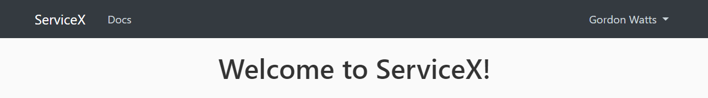
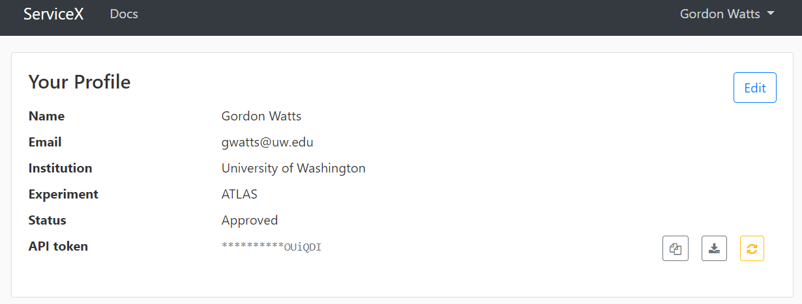

Hello World
Contents
Hello World¶
In this section we’ll outline the steps to go from a brand new python virtual environment to getting a simple result from ServiceX on a new computer.
Setting ServiceX Access¶
ServiceX requires an authentication token to use and access an experiment’s data files. The servicex python module will automatically read this from a servicex.yaml file located on your machine. There are several places it can be located:
In your current working directory, or above it.
In your root directory
It can be called
servicex.yamlor.servicex
To get its contents you’ll need to go to an instance of ServiceX. One you log in you’ll be presented with the standard (rather empty) web page:
{kind=link}
From the drop down on the right, select your name, and select _Profile`. This will bring up a page that looks like this:
{kind=link}
Select the download button to the right of the API Token line. Store this small file in your home directory as servicex.yaml. You should be ready to go! This file is quite flexible, see the section on configuring servicex.
Finding an instance of ServiceX¶
This is a partial list that was up-to-date when this guide was written
ATLAS xAOD and ROOT-file access via the analysis facility at UChicago
CMS ROOT-file access via xxx
CERN OpenData CMS Run 1 AOD access via xxx
Accessing a Plain ROOT File¶
Accessing an ATLAS R21 xAOD File¶
Lets read jets from a modern DAOD_PHYS sample of \(Z->e^+e^-\) events. This file is produced by release 21 of the ATLAS production system (Run 2).
Note
In your servicex.yaml file make sure that the name for the backend is xaod_r21.
from func_adl_servicex_xaodr21 import SXDSAtlasxAODR21, calib_tools
ds_xaod = SXDSAtlasxAODR21("rucio://mc16_13TeV:mc16_13TeV.361106.PowhegPythia8EvtGen_AZNLOCTEQ6L1_Zee.deriv.DAOD_PHYS.e3601_e5984_s3126_r10201_r10210_p5001?files=20")
ds_xaod = calib_tools.query_update(ds_xaod, perform_overlap_removal=False)
The SXDSAtlasxAODR21 is the data source. A rucio dataset. It has 100’s of files in it, and is a test dataset. If we let it run on the full dataset it takes about 15 minutes. Lets run on just the first 20 files, which should take only a minute or two. We select that using the ?file=20 parameter to the URI that specifies the dataset.
v_jets = (ds_xaod
.Select(lambda e: e.Jets())
.Select(lambda jets: [j for j in jets if j.pt()/1000.0 > 30])
.Select(lambda jets: {
'px': [j.px()/1000.0 for j in jets],
'py': [j.py()/1000.0 for j in jets],
'pz': [j.pz()/1000.0 for j in jets],
})
.AsAwkwardArray()
.value()
)
The j.px()/1000.0 is necessary because in ATLAS all values are on mm and MeV.
As the data is processed and streamed back you’ll see progress bars below the cell in a jupyter-notebook that look something like this:
{kind=link}
Overall, this query took 3 minute and 16 seconds on my machine (to run on ServiceX in UChicago, and download the data locally here in France). I you immediately re-execute the cell, the query will take a fraction of a second: results have been cached locally. You can even restart - as long as the query does not change and you don’t delete the cache, the old query results will be found.
print(f'Number of events: {len(v_jets)}')
Number of events: 580000
We can make a very simple plot:
import matplotlib.pyplot as plt
import awkward as ak
plt.hist(ak.flatten(v_jets.px), bins=100, range=(0, 100))
plt.xlabel('$p_x$ [GeV]')
plt.title('$p_x$ distribution')
plt.show()
We can also bring to bear more of the tools in the python physics ecosystem to make a nicer plot!
import vector
vector.register_awkward()
v_jets_v = ak.Array(v_jets, with_name='Momentum3D')
import mplhep as hep
hep.style.use(hep.style.ATLAS)
hep.atlas.label("Personal", data=False)
from hist import Hist
h = (
Hist.new
.Reg(100, 0 , 100, name="pt", label="$p_t$ [GeV]")
.Int64()
)
h.fill(ak.flatten(v_jets_v.pt))
h.plot()
plt.show()
c:\Users\gordo\Code\iris-hep\func_adl_usage\.venv\lib\site-packages\mplhep\utils.py:211: UserWarning: Integer weights indicate poissonian data. Will calculate Garwood interval if ``scipy`` is installed. Otherwise errors will be set to ``sqrt(w2)``.
warnings.warn(
It is also possible to use ServiceX to access xAOD files that are stored locally on your machine. The setup and prerequisites are slightly different, and outlined in this section on local running.